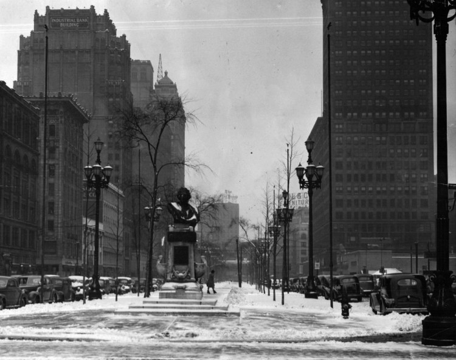

DYNAMISM.
Diane Kirkpatrick, professor of art at the University of Michigan in 1973, writes of Rubello's geometric paintings:
The back plane never reads as infinite space, but rather as a visual limit in front of which, and against which, the volumes act. The volumes also interact with each other; the relationships are never those of stasis, but rather those of implied movement as if Rubello in each piece had caught one moment in a fluid geometric dance….We are never permitted to settle comfortably, even for an instant, into one reading of the forms in space….The work of David Rubello introduces us to a magic world of shapes and space which becomes animated as we look at it.13

See PERCEPTION.
EMPIRE BUILDING.
Another terra cotta building, a high rise notable for its elaborate cornice, the Empire once stood two parcels north of 1420 Washington, at Clifford. It was designed by John Scott and built in 1908.
One reason that Rubello selects 1420 Washington for the site of Color Cubes is because he believes that the Empire Building will help protect his mural from the elements over time. It does so until the late 1990s, when it is razed for a parking lot.
In the photo above, the Empire Building (second from left) can be seen in relation to 1420 Washington (4th from left, with the Robinson Furniture Company sign partially visible). The low-rise building between them is the Wabeek Building, lost to fire in 1961 -- its destruction making the creation of Color Cubes, twelve years later, possible.